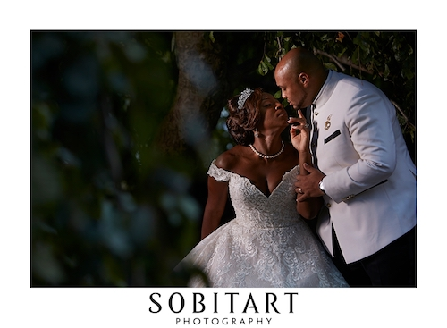
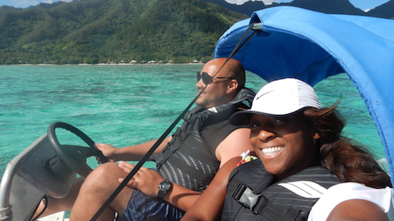
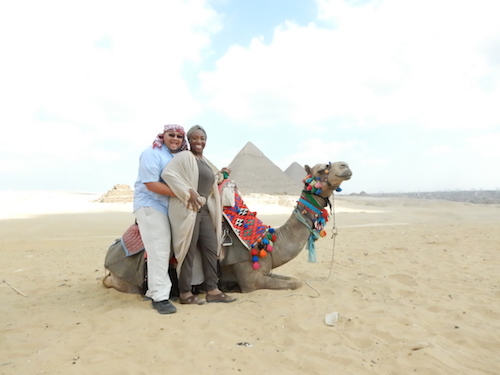
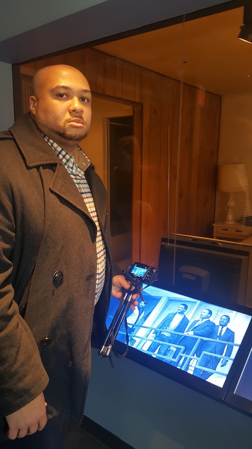

After 10 years in NYC government, I got hitched and moved to Copenhagen, Denmark! I then enlisted into Le Wagon's bootcamp for web development, and now I am on a mission: to save the world by way of CODING.
|  |
Our Wedding DayAugust 26, 2017 - Norwalk, Ct.The weather, Wonderful! The setting, so Serene! My lovely bride, Absoultely Angelic! |
|  |
Water Sport RomanceCata-Jet ride in French Polynesian WatersTwo lovebirds with parents born in the caribeean. We love sun and blue waters. I enjoy riding against the wind, sun-kissed, just me and my boo. |
|  |
Historical Sites Around the WorldGreat Pyramids of Gaza - Cairo, EgyptTraveling around the world with my wife has become my favorite pastime. Unforgettable experiences like our camel ride hanging pyramid side overlooking the Sahara in Cairo, Egypt keeps us in awe of ancient wonders. |
|  |
Civil Rights & Social JusticeNational Civil Rights Museum - Memphis, TNGrowing up I was always inspired by the great civil rights icon Rev. Dr. Martin Luther King, Jr. One of my most memorable moments had to be the day that I visited the the Lorraine Motel, the very room where King lodged in preperation for the Sanitation Workers' Strike and became the site where he was assasinated on April 4, 1968. Social Justice and the fight for civil rights remain important to me as an adult, shaping my goals and aspirations even now. |